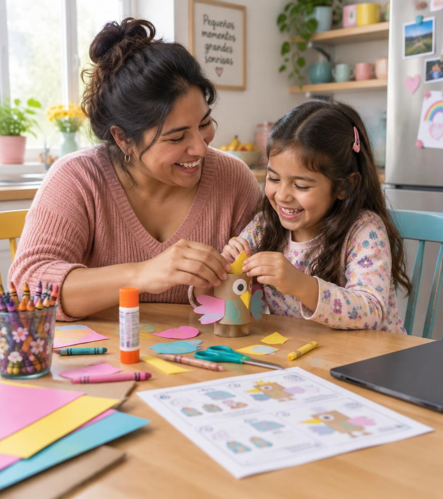
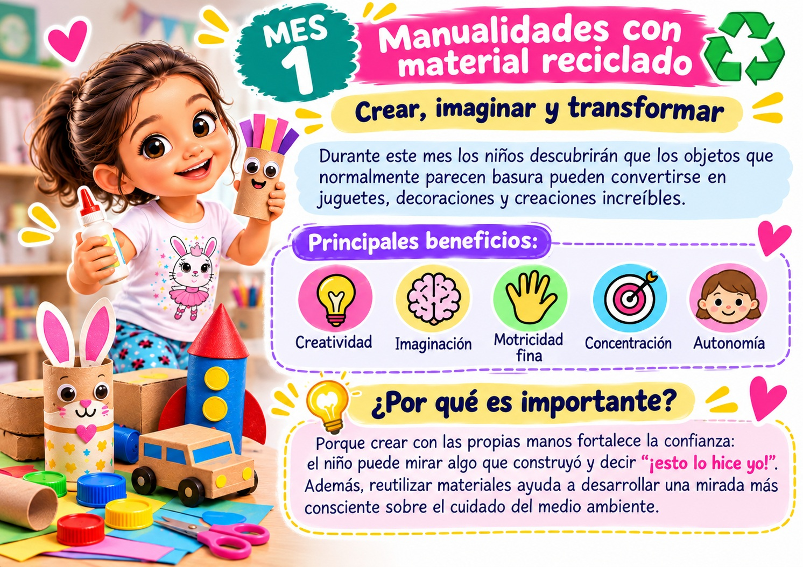
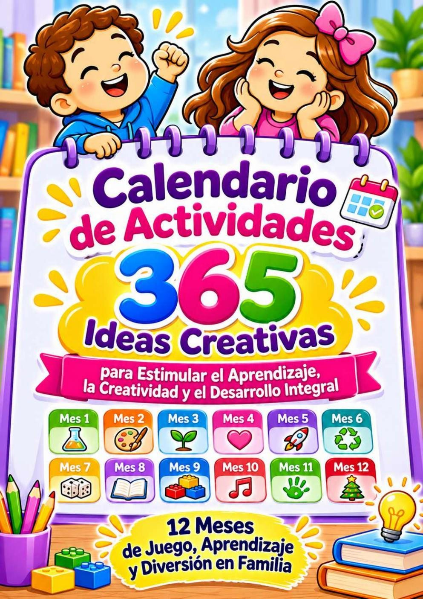
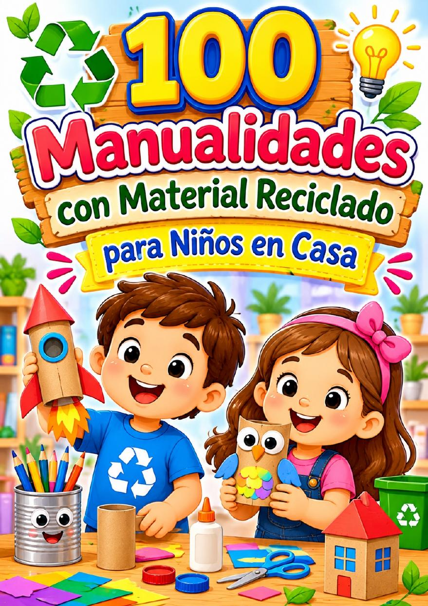
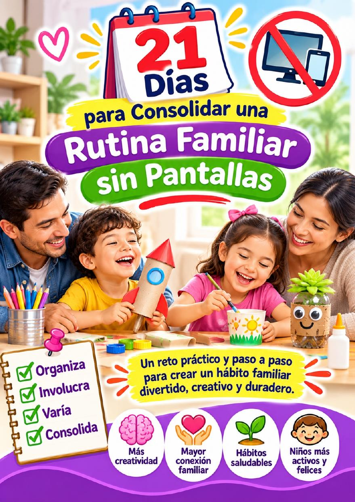
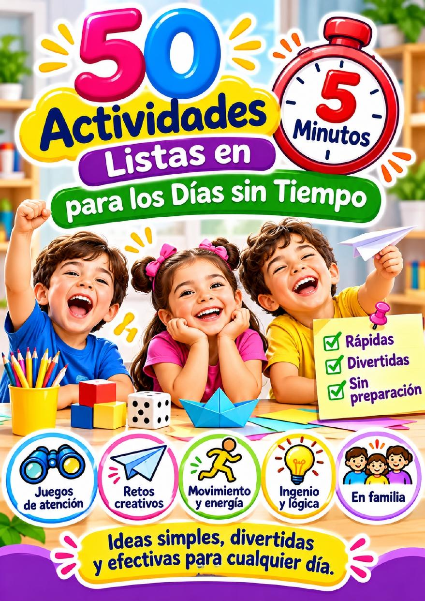

Hoy recibes también 4 bonos de regalo junto a tu guía
Para niñas y niños de 4 a 10 años
365actividadespara desarrollar el potencialde tu hijo
Una idea lista para cada día del año para que tus hijos aprendan, se diviertan y se desconecten de las pantallas, usando materiales que ya tienes en casa.
Cero planificación.Cada actividad trae materiales, tiempo y pasos. Abres el día y empiezas.
12 temáticas, una por mes.De la ciencia a la cocina: tu hijo nunca se aburre de lo mismo.
Desarrollo real mientras juega.Motricidad, lenguaje, concentración, creatividad y autoestima.
Mes 1Manualidades con reciclajeMes 2Juegos de movimientoMes 3Experimentos de cienciaMes 4Arte y creatividadMes 5Cocina en familiaMes 6Aire libre y naturalezaMes 7Juegos de mesa e ingenioMes 8Lectura y cuentosMes 9Construcción y bloquesMes 10Música y ritmoMes 11Retos sensorialesMes 12Fin de año y repasoMes 1Manualidades con reciclajeMes 2Juegos de movimientoMes 3Experimentos de cienciaMes 4Arte y creatividadMes 5Cocina en familiaMes 6Aire libre y naturalezaMes 7Juegos de mesa e ingenioMes 8Lectura y cuentosMes 9Construcción y bloquesMes 10Música y ritmoMes 11Retos sensorialesMes 12Fin de año y repaso
Esto cambia en casa
¿Qué vas a obtener?
Sabrás qué hacer con tus hijos cada uno de los 365 días del año, sin tener que pensarlo.
Pasarás a la acción en minutos con cartón, botellas, papel y lo que ya tienes en casa.
Verás a tu hijo más creativo, concentrado y seguro mientras juega lejos de las pantallas.
Esta es la solución inmediata
Para mamás y papás que quieren ver a sus hijos de 4 a 10 años aprender jugando, desean menos tiempo frente a las pantallas y realmente necesitan ideas listas para cada día.

Pequeños momentos, grandes sonrisas
Te diré algo claramente…
No es que tu hijo “solo quiera el celular”. Muchas veces la pantalla gana porque es lo más fácil a mano, y al final del día, después del trabajo y de la casa, a ti no te queda energía para inventar algo nuevo.
Por eso esta guía no te pide ser experta, comprar materiales caros ni preparar nada. Cada actividad te dice qué necesitas, cuánto dura y cómo hacerla, con cosas que ya tienes: rollos de cartón, botellas, papel, cojines.
Abres el mes, eliges el día y empiezan. Hoy un volcán de bicarbonato, mañana una carrera de obstáculos con cojines, el fin de semana una pizza casera en familia.
El cambio no ocurre de un día para otro, pero se nota: tardes con más risas, menos “me aburro”, y un niño que va ganando creatividad, concentración y confianza mientras ustedes comparten tiempo de verdad.
La meta no es llenar cada minuto del día, sino ofrecerle a tu hijo alternativas sencillas, divertidas y significativas para descubrir que existe un mundo maravilloso más allá de las pantallas.
12 meses · 12 temáticas · 365 actividades
Esto es exactamente lo que recibirás
Toca cada mes para ver qué trabaja tu hijo y algunas de sus actividades.

01
Mes 1
Manualidades con material reciclado
Crear también es divertido
Transforma rollos de cartón, botellas y cajas en juguetes, títeres y adornos mientras practica la motricidad fina.
Algunas actividades:
Portalápices de rollo de cartón
Títere de calcetín
Cohete de rollo de papel
Actividades 1 a 30 · materiales, tiempo y edad en cada ficha
Regalos para ti
ADEMÁS, SI TE UNES AHORA TAMBIÉN TE LLEVARÁS:

Incluido con tu compra
Bono 1
12 Calendarios Mensuales Imprimibles para Elegir la Actividad del Día sin Pensarlo
Un calendario por mes con la actividad de cada día ya asignada, listo para imprimir y pegar en el refrigerador.
Beneficio inmediato: Miras el calendario y ya sabes qué toca hoy.
Incluido sin coste adicional

Incluido con tu compra
Bono 2
100 Manualidades con Material Reciclado para Niños en Casa
100 manualidades nuevas con cartón, plástico, tela, vidrio y metal. Cada una indica qué reciclar y qué crear con eso.
Beneficio inmediato: Lo que ibas a tirar se convierte en la tarde de juego de hoy.
Incluido sin coste adicional

Incluido con tu compra
Bono 3
21 Días para Consolidar una Rutina Familiar sin Pantallas
Un reto de 3 semanas con un paso pequeño por día para que el momento sin pantallas se vuelva un hábito fijo en casa.
Beneficio inmediato: Empiezas hoy con el paso 1: elegir juntos la hora sin pantallas.
Incluido sin coste adicional

Incluido con tu compra
Bono 4
50 Actividades Listas en 5 Minutos para los Días sin Tiempo
Juegos rápidos de atención, movimiento e ingenio que se hacen con lo que tienes a mano y sin preparación.
Beneficio inmediato: Incluso en el día más ocupado tienes un plan en menos de 5 minutos.
Incluido sin coste adicional
Acceso Inmediato a la Oferta Principal
365 Actividades para desarrollar el potencial de tu hijo
La guía digital completa con 365 actividades prácticas para cada día del año (12 temáticas mensuales, fichas paso a paso con materiales de casa y cero pantallas) más los 4 bonos exclusivos de regalo incluidos hoy.
IMPORTANTE: El precio actual de $7 USD puede cambiar en cualquier momento
Resolvemos tus dudas
Preguntas frecuentes
La guía digital completa con 365 actividades prácticas organizadas en 12 temáticas mensuales (una actividad lista para cada día del año con fichas detalladas de materiales cotidianos, tiempo y pasos) más los 4 bonos de regalo: 12 Calendarios Mensuales Imprimibles, 100 Manualidades con Material Reciclado, Guía de 21 Días sin Pantallas y 50 Actividades Listas en 5 Minutos. Todo en formato digital PDF listo para descargar e imprimir.
El acceso es inmediato tras la confirmación del pago. Recibirás un correo electrónico automático de Hotmart con tus credenciales y el enlace directo para acceder al área de miembros y descargar todo el material a tu celular, tablet o computador.
Está especialmente diseñada para mamás, papás, cuidadores y docentes con niñas y niños de 4 a 10 años que desean alternativas divertidas, creativas y significativas para compartir en familia y reducir el tiempo frente a celulares, tablets y televisores.
No necesitas experiencia previa ni conocimientos pedagógicos. Cada actividad fue pensada para ser explicada en pocos segundos y realizarse con elementos que ya tienes en casa: rollos de papel higiénico, cajas de cartón, botellas, papel, tijeras y cucharas.
Puedes abrir y consultar la guía en cualquier teléfono móvil (Android o iPhone), tablet, iPad o computador. Además, todo el material está en formato PDF imprimible, por lo que puedes imprimir las fichas o calendarios las veces que quieras.
El pago se realiza mediante Hotmart, la plataforma más segura de productos digitales en el mundo, respaldada con cifrado SSL de 256 bits. Es un pago único (sin mensualidades ni cargos ocultos) y el acceso a los materiales queda habilitado de por vida.